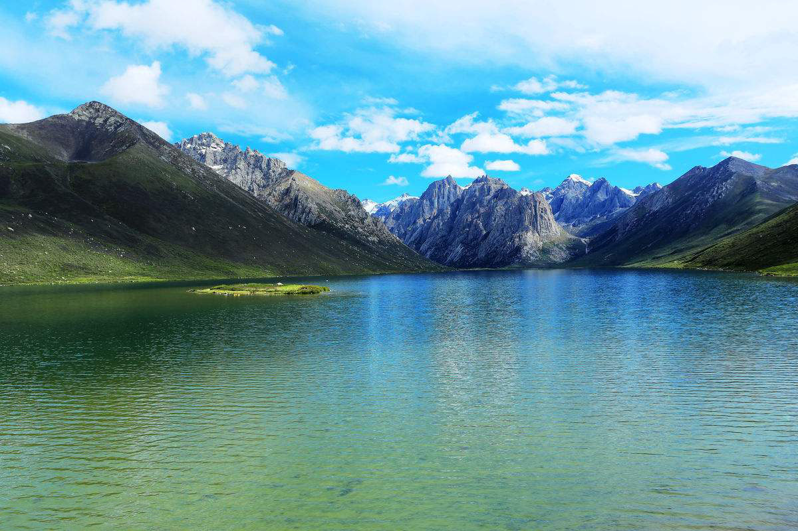

<!DOCTYPE html>
<html>
  <head>
    <meta charset="utf-8" />
    <meta
      name="viewport"
      content="width=device-width,initial-scale=1,maximum-scale=1,user-scalable=0,viewport-fit=cover"
    />
    <title>让图中的水面动起来</title>
    <link rel="stylesheet" type="text/css" href="css/common.css" />
    <link rel="stylesheet" type="text/css" href="css/style.css" />
  </head>
  <body>
    <!--  -->

    <div class="bg-image">
      <svg width="1200px" height="340px" viewBox="0 0 1200 340">
        <defs>
          <filter id="displacementFilter">
            <feTurbulence
              type="fractalNoise"
              baseFrequency="0.01 0.5"
              numOctaves="3"
              result="turbulence"
            >
              <animate
                attributeName="baseFrequency"
                values="0.01 0.5;0.015 0.3"
                keyTimes="0;1"
                dur="10s"
                repeatCount="indefinite"
              />
            </feTurbulence>
            <feDisplacementMap
              in2="turbulence"
              in="SourceGraphic"
              scale="30"
              xChannelSelector="R"
              yChannelSelector="G"
            />
          </filter>
        </defs>

        <image
          xlink:href="./nianbaoyuze.jpg"
          x="0"
          y="-460"
          height="800"
          width="1200"
          filter="url(#displacementFilter)"
        ></image>
      </svg>
    </div>

    <script src="https://cdn.bootcss.com/jquery/3.4.1/jquery.slim.min.js"></script>
    <script src="js/rem.js"></script>
    <script src="js/app.js"></script>
  </body>
</html>
